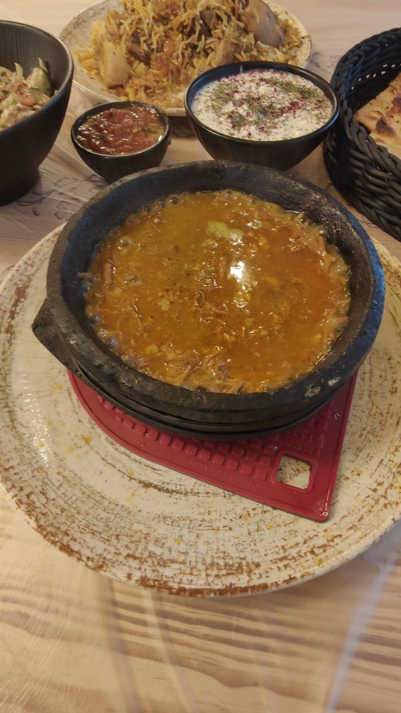

Sana'as bunte Fenster,
mitten in Neukölln.نوافذ صنعاء الملوّنة،
في قلب نويكولن.
Der Name auf dem Schild sagt es: Reise nach Jemen. In neuen, hellen Räumen an der Sonnenallee bringt Sana'a Al Yemen die Küche der jemenitischen Hauptstadt nach Berlin — die Qamariya-Fenster der Altstadt von Sana'a standen Pate für die eigene Inneneinrichtung. Wer hereinkommt, sitzt unter gelben Kuppeldecken und Backsteinbögen, umgeben von Licht in Bernstein und Türkis.الاسم على اللافتة يقول كل شيء: رحلة إلى اليمن. في قاعاتٍ جديدة وأكثر إشراقاً على زوننألي، ينقل مطعم صنعاء اليمن مطبخ العاصمة اليمنية إلى برلين — مستلهِماً ديكوره من نوافذ القمرية الملوّنة في مدينة صنعاء القديمة. من يدخل يجلس تحت سقوفٍ صفراء مقوّسة وأقواسٍ من الطوب، محاطاً بضوءٍ عنبري وفيروزي.
Auf den Tisch kommt, was jemenitische Küche ausmacht: zartes Lamm auf würzigem Reis, hausgemachte Gewürzmischungen, frisches Fladenbrot aus dem Ofen und herzhafte Eintöpfe, die im Steintopf bis an den Tisch weiterköcheln. Fast 900 Bewertungen und 4,9 Sterne sprechen für sich — und wer mag, bestellt für große Feste gleich ein ganzes Lamm.على الطاولة يصل كل ما يميّز المطبخ اليمني: لحم خروف طري على أرزٍ معطّر، خلطات بهارات بيتية، خبز طازج من الفرن، وأطباق غنية تُقدَّم في إناءٍ من الطين لا تزال تغلي حتى الطاولة. قرابة ٩٠٠ تقييم و٤٫٩ نجوم يقولان الباقي — ومن أراد وليمة كبيرة يطلب خروفاً كاملاً.
